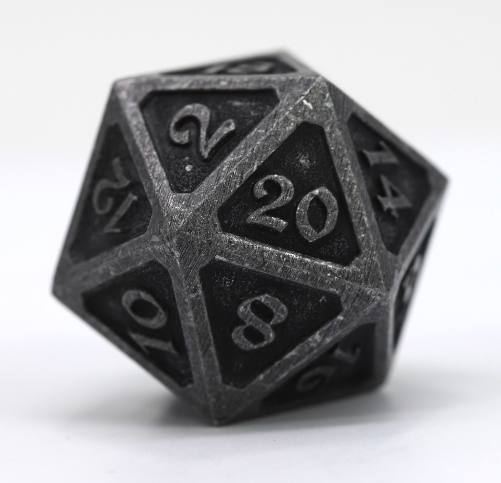

before we find out what a vibe check is we need to find out what a vibe is
a vibe is the feeling you get of someone, this can often be seen when someone has a "good vibe" or a "bad vibe" this is usualy useful because you can see what kind of person they may be.
this brings us the what a vibe check is. "a vibe check is the check of someones vibe" (nagy 9:58am 10/18/19) this was said by the philosfer evan who is known for his lck of intrest in helping people. this is useful to know because we can see what kind of person they are.
this brings us to the final defintion of a Vibe check: the check of someones vibe.
now that we know a vibe check is the check of someones vibe, what can we use this information for? a vibe check can be performed in order to see somones absolute vibe, the higher the better this is this is commany used for finding peoples vibes if you can not sense them.
since we now know what a vibe check is and what is it used for, you may be confused on how to conduct a vibe check. to properly conduct a vibe check you
1. need acces to a d20 aka a 20 sided dice. (you can either use a physical dice or if you dont have acces use a online die)
2. roll this die and write down your score
3. multiply your score by 5 in order to get a more accurate score (lots of people will refer to their vibe score out of 20 however out of 100 is more accurate)
